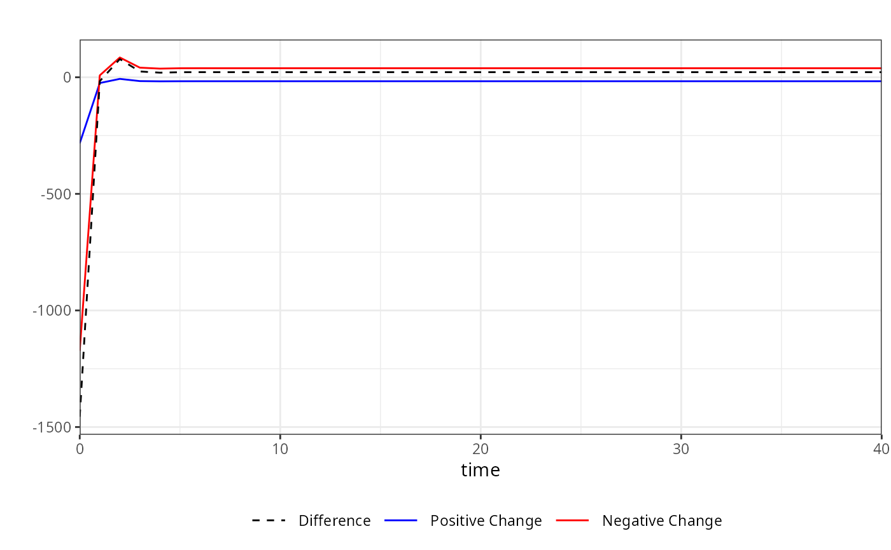

Computes cumulative dynamic multipliers from fitted KARDL models.
The method supports linear, asymmetric, and mixed asymmetric
specifications estimated using the kardl() framework. Dynamic
multipliers can be computed from objects of class kardl_lm
as well as from long-run representations obtained via
kardl_longrun(), using the corresponding S3 methods.
Arguments
- kardl_model
An object of class
kardl_lmorkardl_longrun, representing a fitted KARDL model or its long-run representation.- horizon
Integer. Number of periods ahead for which dynamic multipliers are computed.
- min_prob
Numeric. Minimum p-value threshold for including coefficients in the calculation. Coefficients with p-values above this threshold will be set to zero. Default is
0(no threshold). This parameter allows users to control the inclusion of coefficients in the calculation based on their statistical significance. Setting a threshold can help focus the analysis on more relevant variables, but it may also exclude potentially important effects if set too stringently.- ...
Additional arguments (currently not used).
Value
A list of class kardl_mplier containing:
mpsi: Matrix of cumulative dynamic multipliers.
omega: Vector of omega coefficients (persistence structure).
lambda: Matrix of short-run dynamic coefficients.
horizon: Forecast horizon used.
vars: Extracted model variable structure.
Details
The asymmetry structure is determined internally:
Variables in
extracted_info$asym_short_varsare treated as asymmetric in the short run.Variables in
extracted_info$asym_long_varsare treated as asymmetric in the long run.
This allows four possible configurations:
LL: Linear in both short-run and long-run
NN: Asymmetric in both short-run and long-run
SA: Short-run linear, long-run asymmetric
AS: Short-run asymmetric, long-run linear
When a component is linear, the same coefficient path is used for both positive and negative changes. When asymmetric, separate positive and negative effects are computed.
The mplier function computes dynamic multipliers based on the
coefficients and lag structure of a model estimated using the kardl
package. The function extracts necessary information from the model, such
as coefficients, lag structure, and variable names, to compute the dynamic
multipliers. It calculates the short-run coefficients, Lambda values, and
omega values based on the model's parameters and lag structure. The output
includes a matrix of dynamic multipliers (mpsi), which can be used for
further analysis or visualization. The dynamic multipliers provide insight
into how changes in the independent variables affect the dependent variable
over time, allowing for a deeper understanding of the relationships captured
by the model. The function also allows users to set a minimum p-value
threshold for including coefficients in the calculation, providing
flexibility in focusing on statistically significant effects.
The function constructs dynamic multipliers based on the recursive relationship:
$$ \psi_{h}^{+} = \sum_{i=0}^{h} \frac{\partial y_{t+i}}{\partial x_{t}^{+}}, \quad \psi_{h}^{-} = \sum_{i=0}^{h} \frac{\partial y_{t+i}}{\partial x_{t}^{-}} $$
where \(\psi_h^{+}\) and \(\psi_h^{-}\) represent cumulative responses to positive and negative shocks.
The recursion is defined as:
$$ \psi_h = \lambda_h + \sum_{j=1}^{p} \omega_j \psi_{h-j} $$
where \(\lambda_h\) captures short-run effects and \(\omega_j\) reflects persistence through lagged dependent variables.
When asymmetry is present, positive and negative shocks are propagated separately. Otherwise, the same dynamic path is used.
Examples
# This example demonstrates how to use the mplier function to calculate
# dynamic multipliers from a model estimated using the kardl package.
# The example includes fitting a model with the kardl function,
# calculating the multipliers, and visualizing the results using both
# base R plotting and ggplot2.
# Calculating dynamic multipliers for a linear model in short and long run
# (NN)
kardl_model <- kardl(DriversKilled ~ PetrolPrice, Seatbelts)
m <- mplier(kardl_model, 40)
head(m$mpsi)
#> h PetrolPrice_POS PetrolPrice_NEG PetrolPrice_dif
#> [1,] 0 -490.8080 490.8080 0
#> [2,] 1 -721.1955 721.1955 0
#> [3,] 2 -794.5612 794.5612 0
#> [4,] 3 -806.3901 806.3901 0
#> [5,] 4 -802.6589 802.6589 0
#> [6,] 5 -798.3919 798.3919 0
plot(m)
 # Calculating dynamic multipliers for a model with
# Short-run linear, long-run asymmetric (SA)
kardl_model <- kardl(DriversKilled ~ lasym(PetrolPrice), Seatbelts)
m <- mplier(kardl_model, horizon = 40, min_prob = 0)
head(kardl_extract(m, "multipliers"))
#> h PetrolPrice_POS PetrolPrice_NEG PetrolPrice_dif
#> [1,] 0 -395.0500 395.0500 0
#> [2,] 1 -593.0817 593.0817 0
#> [3,] 2 -668.0545 668.0545 0
#> [4,] 3 -659.7015 659.7015 0
#> [5,] 4 -593.6678 593.6678 0
#> [6,] 5 -531.0524 531.0524 0
plot(m)
# Calculating dynamic multipliers for a model with
# Short-run linear, long-run asymmetric (SA)
kardl_model <- kardl(DriversKilled ~ lasym(PetrolPrice), Seatbelts)
m <- mplier(kardl_model, horizon = 40, min_prob = 0)
head(kardl_extract(m, "multipliers"))
#> h PetrolPrice_POS PetrolPrice_NEG PetrolPrice_dif
#> [1,] 0 -395.0500 395.0500 0
#> [2,] 1 -593.0817 593.0817 0
#> [3,] 2 -668.0545 668.0545 0
#> [4,] 3 -659.7015 659.7015 0
#> [5,] 4 -593.6678 593.6678 0
#> [6,] 5 -531.0524 531.0524 0
plot(m)
 # Calculating dynamic multipliers for a model with
# Short-run asymmetric, long-run linear (AS)
kardl_model <- kardl(DriversKilled ~ sasym(PetrolPrice), Seatbelts)
m <- mplier(kardl_model, 40)
plot(m)
# Calculating dynamic multipliers for a model with
# Short-run asymmetric, long-run linear (AS)
kardl_model <- kardl(DriversKilled ~ sasym(PetrolPrice), Seatbelts)
m <- mplier(kardl_model, 40)
plot(m)
 # Calculating dynamic multipliers for a model with
# asymmetric effects in both short and long run (NN)
kardl_model <- kardl(DriversKilled ~ asym(PetrolPrice) + drivers, Seatbelts)
m <- mplier(kardl_model, 40)
plot(m)
#> Warning: Multiple variables selected. Only the first one will be plotted.
# Calculating dynamic multipliers for a model with
# asymmetric effects in both short and long run (NN)
kardl_model <- kardl(DriversKilled ~ asym(PetrolPrice) + drivers, Seatbelts)
m <- mplier(kardl_model, 40)
plot(m)
#> Warning: Multiple variables selected. Only the first one will be plotted.
 # The multipliers matrix contains the cumulative dynamic multipliers for each
# variable and time horizon. The omega vector contains the persistence
# structure of the model, while the lambda matrix contains the short-run
# dynamic coefficients. You can inspect these components to understand the
# dynamics captured by the model.
head(kardl_extract(m, "multipliers"))
#> h drivers_POS drivers_NEG drivers_dif PetrolPrice_POS PetrolPrice_NEG
#> [1,] 0 0.07814436 -0.07814436 0 -283.148538 -1172.694364
#> [2,] 1 0.08894958 -0.08894958 0 -24.694623 8.116859
#> [3,] 2 0.07452635 -0.07452635 0 -6.876406 84.849854
#> [4,] 3 0.07372508 -0.07372508 0 -16.390854 41.256389
#> [5,] 4 0.07426117 -0.07426117 0 -17.332576 37.131221
#> [6,] 5 0.07430640 -0.07430640 0 -16.989924 38.706236
#> PetrolPrice_dif
#> [1,] -1455.84290
#> [2,] -16.57776
#> [3,] 77.97345
#> [4,] 24.86554
#> [5,] 19.79864
#> [6,] 21.71631
head(kardl_extract(m, "omega"))
#> [1] 0.02660202 -0.03864692
head(kardl_extract(m, "lambda"))
#> drivers_POS drivers_NEG PetrolPrice_POS PetrolPrice_NEG
#> [1,] 0.078144356 0.078144356 -283.1485 1172.694
#> [2,] 0.008726426 0.008726426 265.9862 -1212.007
#> [3,] -0.011690630 -0.011690630 0.0000 0.000
#> [4,] 0.000000000 0.000000000 0.0000 0.000
#> [5,] 0.000000000 0.000000000 0.0000 0.000
#> [6,] 0.000000000 0.000000000 0.0000 0.000
# For plotting specific variables, you can specify them in the plot
# function. For example, to plot the multipliers for the variable "drivers":
plot(m, variable = "drivers", title = "Dynamic Multipliers for drivers")
# The multipliers matrix contains the cumulative dynamic multipliers for each
# variable and time horizon. The omega vector contains the persistence
# structure of the model, while the lambda matrix contains the short-run
# dynamic coefficients. You can inspect these components to understand the
# dynamics captured by the model.
head(kardl_extract(m, "multipliers"))
#> h drivers_POS drivers_NEG drivers_dif PetrolPrice_POS PetrolPrice_NEG
#> [1,] 0 0.07814436 -0.07814436 0 -283.148538 -1172.694364
#> [2,] 1 0.08894958 -0.08894958 0 -24.694623 8.116859
#> [3,] 2 0.07452635 -0.07452635 0 -6.876406 84.849854
#> [4,] 3 0.07372508 -0.07372508 0 -16.390854 41.256389
#> [5,] 4 0.07426117 -0.07426117 0 -17.332576 37.131221
#> [6,] 5 0.07430640 -0.07430640 0 -16.989924 38.706236
#> PetrolPrice_dif
#> [1,] -1455.84290
#> [2,] -16.57776
#> [3,] 77.97345
#> [4,] 24.86554
#> [5,] 19.79864
#> [6,] 21.71631
head(kardl_extract(m, "omega"))
#> [1] 0.02660202 -0.03864692
head(kardl_extract(m, "lambda"))
#> drivers_POS drivers_NEG PetrolPrice_POS PetrolPrice_NEG
#> [1,] 0.078144356 0.078144356 -283.1485 1172.694
#> [2,] 0.008726426 0.008726426 265.9862 -1212.007
#> [3,] -0.011690630 -0.011690630 0.0000 0.000
#> [4,] 0.000000000 0.000000000 0.0000 0.000
#> [5,] 0.000000000 0.000000000 0.0000 0.000
#> [6,] 0.000000000 0.000000000 0.0000 0.000
# For plotting specific variables, you can specify them in the plot
# function. For example, to plot the multipliers for the variable "drivers":
plot(m, variable = "drivers", title = "Dynamic Multipliers for drivers")
 # To plot the multipliers for the variable "PetrolPrice" without a title,
# you can use:
plot(m, variable = "PetrolPrice", title = "")
# To plot the multipliers for the variable "PetrolPrice" without a title,
# you can use:
plot(m, variable = "PetrolPrice", title = "")
